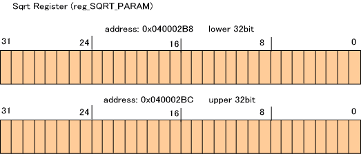
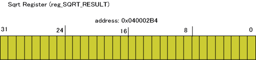
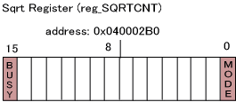

The DS has accelerators for division and square-root computations. This section describes the square root coprocessor.
Registers for Square-Root Calculations
The following data registers are available for the calculation parameters and calculation results.


Also, a control register is available to control the square root coprocessor.

Operations of the Square Root Coprocessor
To perform calculations, the square root coprocessor sets the parameters for the square-root calculation in the data register SQRT_PARAM. After the control register SQRTCNT is appropriately set, the results of the calculation are saved in SQRT_RESULT. (The calculation actually begins as soon as a value is set in either SQRT_PARAM or SQRTCNT. If data get written to the registers during the calculation, the calculation restarts from the beginning.)
There are two modes for square-root calculations:
You can switch between these two modes by changing the value set in the MODE bit of the SQRTCNT register.
When the square root coprocessor begins a calculation, the SQRTCNT register's BUSY bit becomes 1. The bit remains 1 until the result is computed. When this bit becomes 0, the value in the SQRT_RESULT register holds the correct computation result.
Calculation Cycles
The number of cycles required by the square root coprocessor to perform a calculation is the same, regardless of the mode.
To make more efficient use of the square root coprocessor, you can perform another task while waiting for the results after setting the parameters in the registers of the coprocessor.
Setting the Parameters
The parameters for square-root calculations are set using CP_SetSqrtImm*() and CP_SetSqrt*(). The latter function can also set the SQRTCNT register's calculation mode.
Thus, if you plan to perform a succession of square-root calculations in the same mode, you can use CP_SetSqrt*() the first time and then use CP_SetSqrtImm*() all subsequent times.
Waiting for Calculation to End
To check whether or not the calculation has ended, call CP_IsSqrtBusy().
To wait for the calculation to end, call CP_WaitSqrt().
Getting the Calculation Result
To get the result of the square-root calculation, call either CP_GetSqrtResult*() or CP_GetSqrtResultImm*(). The former waits until SQRTCNT is no longer in the BUSY state before getting the result. The latter acts immediately.
Note
If you are using the thread system, the square-root calculations are thread safe by default.
Example
In this example, the square root coprocessor is used to calculate the square root and the result are displayed.
u32 result;
//---- set parameter and sqrt-mode
CP_SetSqrt( 0x12345678, CP_SQRT_32BIT_MODE );
//---- wait for sqrt operation to finish
CP_WaitSqrt();
//---- display result
result = CP_GetSqrtResultImm32();
OS_Printf( "result=%x\n", result );
12/27/2004 Initial version.
CONFIDENTIAL